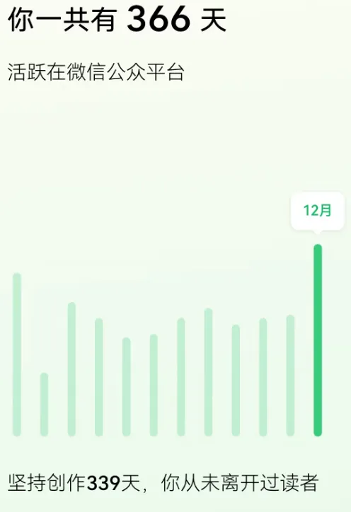
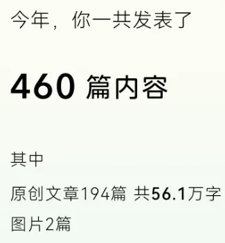
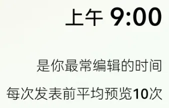
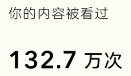
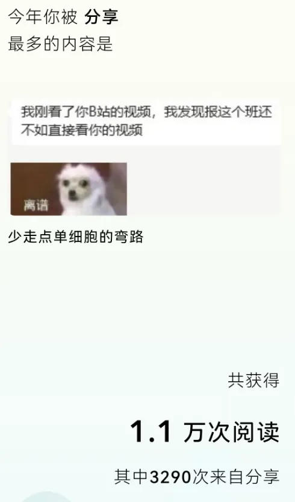
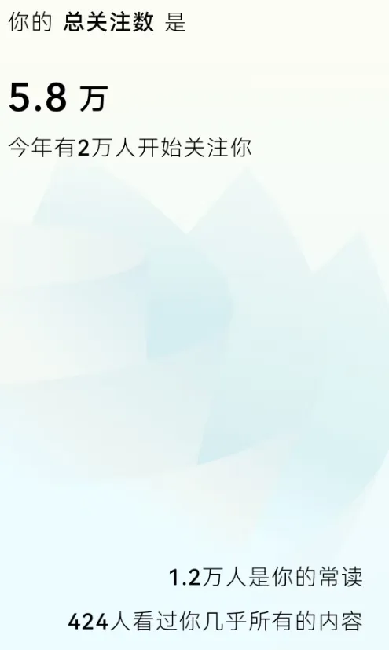

为今年的工作收个尾
原文：https://mp.weixin.qq.com/s?__biz=MzAwMzIzOTk5OQ==&mid=2247527070&idx=1&sn=ab9b172d28635926da0495b73a8eef70&chksm=9b3c13ceac4b9ad8727cce2283ab728f28e44832e77a4ef855deca73e91425d7571b785144fc#rd 合集：漫谈胡侃
公众号官方前几天发送了一份年度总结，一些数据颇有意思，值得和大家分享一番。首先，我在24年一共活跃了366天 ，保持了全勤的肝度。

当然，我也没有在水工作时长，今年一共发表了460篇内容，其中194篇 都是原创，共包含56.1w字 ，相信还是给大家提供了量大管饱的生信内容分享。

让人意外的是，我居然每次发布推送前会预览检查十次 ，充分体现了我菜就多练的良好品质。

我们一共收获了132.7万次 的阅读量，平均一篇的阅读量是2.8k(次条拖后腿了)
不出意外的，我们阅读量最高的教程依然是单细胞测序类的：

我们的招聘启事居然被微信官方推荐了，我们非常欢迎小伙伴们加入我们的队伍：Biomamba生信基地招聘启事
最后，也感谢大家的陪伴 ，我们现在已经有了六万个伙伴，并且在24年内我们就收获了2w个朋友。希望在未来的一年里，我们还能多多交流


如何联系我们

 公众号后台消息回复不便，这里给大家留一下领取资料及免费服务器(足够支持你完成硕博生涯的生信环境)的微信号 ，方便各位随时交流（别问在么，添加时直接说来意）。呼声很高的交流群 也建好了，欢迎大家入群讨论：
公众号后台消息回复不便，这里给大家留一下领取资料及免费服务器(足够支持你完成硕博生涯的生信环境)的微信号 ，方便各位随时交流（别问在么，添加时直接说来意）。呼声很高的交流群 也建好了，欢迎大家入群讨论：
大家可以阅读完这几篇之后添加给生信入门初学者的小贴士 如何搜索公众号过往发布内容
已有生信基地联系方式的同学无需重复添加

 您点的每个赞和在看，我都认真当成了喜欢
您点的每个赞和在看，我都认真当成了喜欢